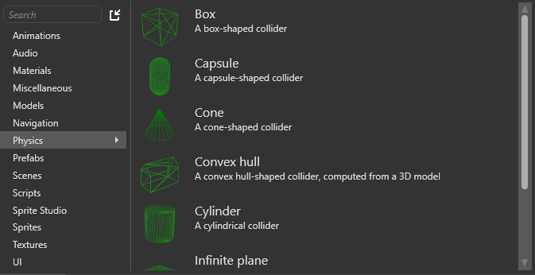

コライダーの形状
初級 デザイナー
コライダーが相互作用を行うには、［Property grid］でその形状を設定する必要があります。幾何学的形状を指定するか、コライダー形状アセットを使用することができます。
コンポーネントは、交差する複数の形状を持つことができ、エンティティ モデルが一致する必要はありません (ある場合)。各形状には、サイズ、向き、オフセットなどの追加プロパティがあります。
コライダーの形状の種類
ボックス
| プロパティ | 説明 |
|---|---|
| Is 2D | ボックスを 1 つの次元について無限に平らにします。 |
| Size | XYZ 値でのボックスのサイズです。 |
| Local offset | エンティティを基準にしたボックスの位置です。 |
| Local rotation | XYZ 値でのボックスの回転です。 |
カプセル
カプセル形状は、キャラクター コンポーネントの場合に特に便利です。底部が曲線になっているため、エンティティはより高い平面に移動できます (階段を上るときなど)。
| プロパティ | 説明 |
|---|---|
| Is 2D | カプセルを 1 つの次元について無限に平らにします。 |
| Length | カプセルの長さです。 |
| Radius | カプセルの半径です。 |
| Orientation | 形状の長軸の方向です (X、Y、または Z)。 |
| Local offset | エンティティを基準にしたカプセルの位置です。 |
| Local rotation | XYZ 値でのカプセルの回転です。 |
コーン
| プロパティ | 説明 |
|---|---|
| Height | コーンの高さです。 |
| Radius | コーンの下端の半径です。 |
| Orientation | 形状の長軸の方向です (X、Y、または Z)。 |
| Local offset | エンティティを基準にしたコーンの位置です。 |
| Local rotation | XYZ 値でのコーンの回転です。 |
シリンダー

| プロパティ | 説明 |
|---|---|
| Height | シリンダーの長さです。 |
| Radius | シリンダーの半径です。 |
| Orientation | 形状の長軸の方向を設定します (X、Y、または Z)。 |
| Local offset | エンティティを基準にしたシリンダーの位置です。 |
| Local rotation | XYZ 値でのシリンダーの回転です。 |
球体

| プロパティ | 説明 |
|---|---|
| Is 2D | 球体を 1 つの次元について無限に平らにします。 |
| Radius | 球体の半径です。 |
| Local offset | エンティティを基準にした球体の位置です。 |
無限平面
無限平面は 1 つの次元について無限の距離をカバーします。 どこまでも続いている壁や床のようなものです。 複数の無限平面を使用してユーザーを囲み、レベルの外に「通り抜ける」ことができないようにします。
| プロパティ | 説明 |
|---|---|
| Normal | 平面に垂直なベクトル (X、Y、または Z) です。たとえば、無限の床にするには、法線プロパティを X:0, Y:1, Z:0 に設定します。 |
| Offset | エンティティを基準にした平面の位置です。 |
アセット
コライダーの形状をコライダー形状アセットから割り当てます (後の「コライダー形状アセット」を参照)。
| プロパティ | 説明 |
|---|---|
| Shape | コライダーの形状を生成するために使用されるコライダー形状アセットです。 |
コライダー形状アセット
コライダー形状アセットを作成して、それをコライダーの形状として使用することもできます。つまり、コライダー形状アセットを編集し、それを使用するすべてのエンティティで自動的に更新することができます。
コライダー形状アセットを作成する
［Asset view］(既定では下部) で、［Add asset］をクリックします。
［Physics］を選択し、作成する形状を選択します。

新しいコライダー形状アセットが［CollisionMeshes］フォルダーに作成されます。

モデルからコライダー形状アセットを作成する
これは、モデルと一致するコライダーの形状をすばやく作成するのに便利です。
［Asset view］(既定では下部) で、［Add asset］をクリックします。
［Physics］>［Convex hull］の順に選択します。
［Asset picker］ウィンドウが開きます。
作成するコライダー形状アセットの基にするモデル アセットを選択して、［OK］をクリックします。
モデルからコライダー形状アセットが作成されます。
コライダー形状アセットを使用する
静的コライダーまたは剛体のプロパティで、［Collider Shapes］の［Asset］を選択します。
［Shape］で、使用するコライダー形状アセットを指定します。

そのためには、［Asset view］から［Property grid］の［Shape］にアセットをドラッグします。または、
 (［Select an asset］) をクリックしてアセットを選択します。
(［Select an asset］) をクリックしてアセットを選択します。